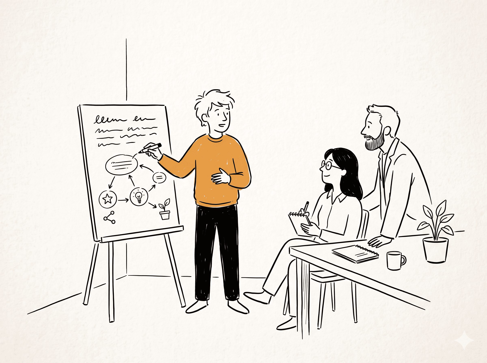

In this article
Why I'm Writing This
I'm writing this as an engineering lead, but also as someone who is still learning. Over time, I've seen a pattern: when people grow, workplaces grow. When people stagnate, workplaces stagnate.
This isn't about working harder or turning growth into another performance checkbox. It's about building a career you're proud of, and why that is one of the best things you can do for yourself, your team, and this workplace.
I believe growth is one of the few things where individual ambition and workplace ambition can align. Your growth isn't a corporate KPI. It's the whole point.
Why Growth Matters
Let me tell you what I've learned.
For you:
- The skills you build here, you keep forever
- Your market value increases with every meaningful problem you solve
- You become someone who can handle bigger challenges, which means bigger opportunities
- Work becomes more interesting because boredom is the enemy of fulfilment
For the workplace:
- When you grow, you solve harder problems
- When you solve harder problems, we build better products
- When we build better products, we create more opportunities
- More opportunities create more room for you to grow further
See the loop? Your growth and the workplace's growth are not competing interests. At their best, they support each other.
The best workplaces understand this. We don't want you to stay an SDE-1 forever doing the same tasks. We want you to become the senior engineer, the tech lead, the architect, and the person who helps build the next generation of engineers after you.
Growth Is How We Move Forward
Here's something beautiful about being human: every generation stands on the shoulders of the previous one.
Your grandparents would be astonished by what you consider "basic." The engineers before you built the foundations you now build upon. Someday, engineers will build on your work too.
This isn't automatic. Progress happens because people choose to learn, improve, and pass knowledge forward.
You are a link in that chain.
The question isn't whether you'll contribute; it's how much. Will you pass on more than you received? Will you leave your team, your codebase, and your workplace better than you found them?
Growth isn't just personal ambition. It's how we move forward together.
Labour Mindset vs. Growth Mindset (Both Are Okay)
I've seen two approaches in my career. I don't see them as good people vs. bad people. I see them as patterns, and most of us move between them depending on the season we are in.
The Labour Mindset
- "That's not in my job description"
- "I did what was asked"
- "Nobody told me to do that"
- "I've been doing it this way for years"
This approach treats work as a transaction: hours for money. It completes tasks, but it doesn't always seek to understand why those tasks matter. It waits for instructions instead of anticipating needs.
What happens: five years in a role does not always mean five years of growth. Sometimes, it is the same year repeated. The world moves on, and eventually the gap becomes painful for the person and for the team that depends on them.
The Growth Mindset
- "I finished that. What's the bigger problem we're solving?"
- "I don't know how to do this yet, but I'll figure it out"
- "Here's what I learned from that failure"
- "Can I shadow you? I want to understand the whole picture"
This approach sees work as an opportunity. Every task teaches something. Every failure provides data. Every senior engineer is a mentor waiting to be asked.
What happens: people become valuable not because they hoard knowledge, but because they keep expanding what they can contribute. They lift their team. They become the kind of person others want to work with.
Be Selfish About Learning (It Benefits Everyone)
Here's something that sounds cynical but is actually a gift:
You are being paid to learn.
Think about what your job gives you:
- Real problems with real stakes, not textbook exercises
- Production systems at scale, not only side projects
- Senior engineers who've solved these problems before
- A safe environment to fail and learn
- 8+ hours a day in a professional learning environment
This is one of the best deals you'll ever get. And here's the beautiful part: when you take full advantage of it, everyone wins.
- You grow your skills, so you solve harder problems
- You solve harder problems, so the team delivers more
- The team delivers more, so the workplace grows
- The workplace grows, so there are more interesting problems, more opportunities, and more growth
Be hungry about learning:
- That system you don't understand? Ask to be on the rotation
- That senior engineer? Ask them to review your code ruthlessly
- That scary project? Volunteer for it
- That meeting above your level? Ask if you can observe
You're not being selfish. You're investing in the person you'll become, and that person will give back tenfold.
I don't think growth should be forced. But I do believe work becomes more meaningful when we treat it as a place to learn, contribute, and become better.
The Outcome Question
I want you to think about something:
"What outcomes am I creating?"
This isn't about guilt or overwork. It's about intentionality.
Your value isn't measured in hours or lines of code. It's measured in problems solved, systems improved, teammates helped, and knowledge shared.
Ask yourself:
- What did I ship this month that mattered?
- What did I learn that makes me more capable?
- Who did I help grow?
- What's better because I was here?
When you can answer these clearly, two things happen:
- You feel genuine pride in your work
- You can advocate for yourself: raises, promotions, and opportunities
Track your growth. Keep a running document of wins, learnings, and contributions. This isn't vanity; it's self-awareness. And it helps us help you.
How We Grow Together: Practical Steps

Growth isn't abstract. Here's how to make it real.
Learn Deeper
Whatever you're working on, understand one level below the surface. Using an API? Read its implementation. Deploying code? Understand the pipeline. This compounds fast.
Don't just go deep; go wide too. Understand how product thinks. Know what matters to customers. Learn how other teams work. Engineers who see the whole picture become force multipliers.
Share Outward
Explain concepts to teammates. Write documentation. Mentor someone newer. Teaching forces understanding, and it lifts the whole team.
When you share what you learn, your growth compounds across the team.
Help a teammate debug. Share an article that changed your thinking. Celebrate someone's win. When you help others grow, you reinforce your own learning and build a stronger team.
Seek Feedback and Build Judgment
In meetings, ask yourself: "What would I decide here?" Then watch what happens. When decisions differ from yours, ask why. This is how you graduate from executor to leader.
Don't wait for reviews. Ask regularly: "What could I improve?" "How would you have done this?" Most people never ask. Those who do accelerate faster, and they help us understand how to support them better.
The Truth About Advancement
Here's how promotions actually work:
You don't get promoted for doing your current job well. You get promoted when you're already operating at the next level.
This means:
Don't ask "What are my responsibilities?"
Ask "What do people at the next level do? How can I start doing that?"
But here's the part people miss: this isn't just about titles. It's about expanding your impact. When you operate at a higher level:
- You solve bigger problems
- You help more people
- You create more value
- You find more meaning in your work
Growth isn't just a path to promotion. Growth is the reward.
What We Commit to You
Growth is a two-way street. Here's what you can expect from us:
- Challenging work that stretches you
- Mentorship from people who've been where you are
- Feedback that's honest and constructive
- Opportunities to take on more when you're ready
- Recognition when you grow and contribute
- Support when you struggle, because everyone does
We're not asking you to figure this out alone. We're asking you to show up with a growth mindset, and we'll meet you there.
The Compound Effect
Here's the math that excites me:
If you improve 1% every day, in one year you're 37 times better than when you started.
Now multiply that across a team. Across a workplace.
When everyone grows, everything grows:
- Better engineers build better systems
- Better systems serve customers better
- Better service creates more opportunity
- More opportunity means more growth for everyone
This is why your growth matters so much. Not because we want to extract value from you, but because your growth is how we all win.
A Final Thought
The engineers who thrive aren't necessarily the smartest or most credentialed. They're the ones who decide, every single day, to get a little better.
They ask questions. They take on hard things. They help their teammates. They stay curious.
Your career is yours to build. We want to be the place where you build something you're proud of: skills, relationships, and impact.
So here's my question for you:
What are you going to learn this week? And who are you going to help grow along the way?
When people grow, teams grow. When teams grow, workplaces grow. When workplaces grow, there's more room for people to grow. This is the loop we're building together.